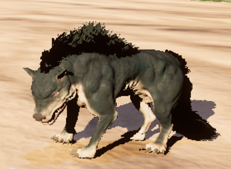
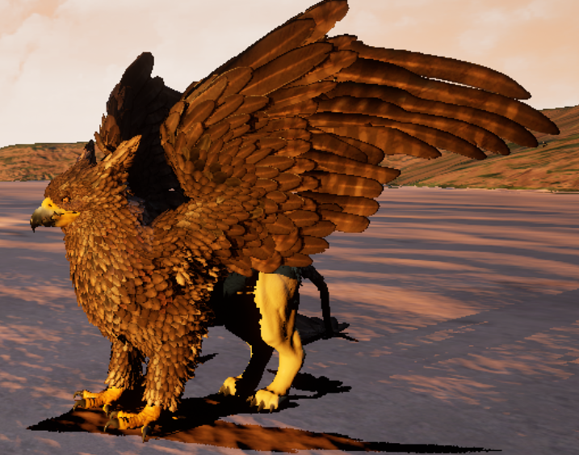
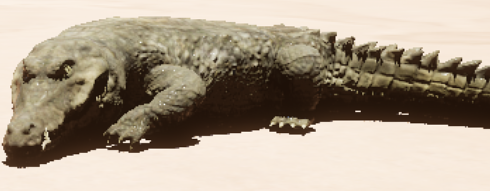

Beštiár
Ľaň

Životy: 50
Slabina: oheň
Body agresie: 5
Návnada: ovocná
Prostriedky: zvieracia srsť
Výskyt: lúka
Ľane sa držia pri svojom stáde. Pasú sa, prechádzajú sa alebo sa obzrú okolo seba. Keď sa ľaň pasie, nevidí nič,
čo sa okolo nej deje a musí sa spoliehať len na sluh. Pri prechádzaní vidí pred seba, ak sa však obzerá alebo ju
niečo vystrašilo je v strehu a má prehľad o celom svojom okolí. Pokiaľ ľaň niečo začuje, preruší aktuálnu činnosť
a poobzerá sa. Ak zistí vo svojom okolí nejakú hrozbu, zamečí, aby upozornila ostatných členov stáda a pokúsi sa
utiecť. Pokiaľ ľaň nič neohrozuje a v jej okolí sa nachádza ovocná návnada príde k nej a zožerie ju.
Jeleň

Životy: 80
Slabina: oheň
Body agresie: 5
Návnada: ovocná
Prostriedky: zvieracia srsť
Výskyt: lúka, les
Správanie jeleňov je vo väčšine vecí zhodné s ľaňami. Rozdiel je v reakcii na hrozbu. Pokiaľ je hrozba dostatočne
ďaleko, rovnako ako ľaň aj jeleň rykom informuje ostatné blízké lane a jelene a pokúsi sa utiecť. Ak sa však hrozba
bez povšimnutia dostala príliš blízko, po upozornení ostatných, jeleň na hrozbu zaútočí. Vzdialenosť od jeleňa, v
ktorej sa hrozba musí zdržiavať, aby po nej jeleň útočil sa postupne znižuje, čo dáva útočníkovi šancu utiecť. Ak
však útočník jeleňa poraní, vzdialenoť sa opäť predĺži na pôvodnú veľkoť.
Vlk

Životy: 100
Slabina: voda
Body agresie: 3
Návnada: mäsová
Prostriedky: kosť, zvieracia srsť
Výskyt: lúka, les
Vlky žijú vo svorkách. Každá svorka má jedného alfu, ktorý určuje, čo svorka robí. Ak je sforka v pokoji, alfa leží
na zemi a ostatné vlky sa okolo neho prechádzajú. Svorka neútočí a ani nehľadá korisť. Je možné okolo nej prejsť bez
problémov. Svorka v pokoji reaguje len na poranenie jedného z jej členov, kedy okmažite zaútočí na útočníka, alebo
ak spozouje návnadu. Keď sa alfa postaví, je to znak, že svorka začala loviť. Vlky sledujú svoje okolie a hladajú
vhodnú korisť. Ak niektorý vlk niečo zbadá, informuje o tom alfu, ktorý rozhodne, či je to vhodná korisť. Ak môžu
vyberú si hráča. Alfa ohlási začiatok lovu zavytím. Pokiaľ vlky úspešne zabijú svoj cieľ, alebo ho niesú schopní
uloviť do 30 sekúnd, prejdú do pokoja. Vlky reagujú na mäsovú návnadu. Ak ju niektorý vlk zbadá, zavyje. Alfa
mu odpovie a potom vlky prerušia to čo robia, a prídu k návnade. Vlky vidia dosť ďaleko pred seba ale počujú iba
veľmi blízke zvuky.
Vlkolak

Životy: 150
Slabina: ľad
Body agresie: 2
Návnada: -
Prostriedky: zvieracia srsť, kosť
Výskyt: lúka, les, pláž, hory
Vlkolak je krátkozraký tvor, ktorý sa spolieha najmä na sluch, ktorý má veľmi dobrý. Ak začuje zvuk tvora, ktorý by
ho mohol ohroziť, pokúsi sa od tohto tvora odísť preč, ak však začuje zvuk možnej koristi, pôjde ho preskúmať.
Keď zbadá korisť, nastaví si ju ako svoj cieľ. Cieľom sa môže stať aj hocičo, čo ho udrelo. Ak je cieľ bližšie ako
150 jednotiek od vlkolaka vyberá si medzi svojím normálnym útokom - zaženie sa po cieli a ak ho zasiahne, uberie 20
bodov života - alebo medzi svojim zavytím, ktoré na päť sekúnd znehybní všetkých aktorov, ktorý sa prelínajú s
kolíznou sférou StunRange (polomer 1000 jednotiek). Ak je cieľ bližšie ako 600 jednotiek, vlkolak sa môže rozhodnúť
zavytiť, ale nemusí. Ak nevykoná žiadnu s predchádzajúcich aktívit, pokúsi sa dostať na pozíciu cieľa a potom zaútočí
bežným útokom. Po zavytí, môže vlkolak opäť zavyť najskôr o 10 sekúnd. Ak do 20 sekúnd cieľ nezničí, premená Target,
v ktorej sa uchováva referencia na cieľ sa vynuluje. V prípade, že vlkolak zomrie a v blízkosti do 2500 jednotiek je
nejaký iný tvor implementujúci interface BI_WerewolfOrBarghest, tak ten si nastaví za svoj cieľ, cieľ mŕtveho vlkolaka.
Ak je v oblasti viac takýchto tvorov, vyberie sa jeden náhodný.
Havran

Životy: 30
Slabina: blesky
Body agresie: 5
Návnada: ovocná, mäsová
Prostriedky: perie
Výskyt: lúka, les, dedina
Havran je voči hráčovi pasívny tvor. Pokiaľ ho nič nevyrušilo, iba sa náhodne prechádza po zemi. Ak zbadá návnadu,
rýchlo k nej dohopká a zje ju. Ak sa hocijaký tvor alebo hráč dostane príliš blízko, zakráka a odletí preč. Výnimka
nastane, keď hráč má zvolený ako aktívny tretí slot a v ňom má vhodnú návnadu. Vtedy, ak havran zbadá hráča skôr, ako
ho hráč vystraší, namiesto toho, aby odleteľ preč, buďe hráča nasledovať. Poletí za ním, do kým sa nepriblíži na 300
jednotiek. Potom pristane na zem a bude sa otáčať smerom na hráča. Ak sa hráč vzdiali, havran za ním opäť priletí.
Havran takisto reaguje aj na niektoré iné tvory ako napríklad vlkola. Ak ich zbadá, začne im lietať okolo hlavy a
útočiť na nich. Po 30 sekundách od zbadania tvora, odletí preč.
Barghest

Životy: 200
Slabina: blesky
Body agresie: 2
Návnada: mäsová
Prostriedky: barghestova srsť, kosť
Výskyt: pláž, hory
Barghest je duch s podobou veľkého strašidelného psa. Pokiaľ práve neloví, prechádza sa a striehne korisť, pričom
sa občas na chvíľu môže zneviditeľniť. V tedy z neho vydno len zopár fliačikov tmavej srsti. Keď začuje nejaký zvuk
otočí sa za ním a chvíľu ostane stáť. Keď si zvolí cieľ, zneviditeľní sa a priblíži sa k nemu do vzdialenosti 800
jednotiek. Potom začne okolo cieľa krúžiť. To, že je blízko sa dá zistiť pomocou jeho hlasného dýchania. Tesne pred
tým ako zaútočí, zviditeľní sa a potom sa vrhne po koristi. Po útoku sa opäť zneviditeľní a pokračuje v obchádzaní
koristi. Ak sa cieľ vzdiali na viac ako 800 jednotiek, pobeží za ním. Po 30 sekundách sa môže vzdať prenasledovania
koristi. Takisto prestane korisť prenasledovať ak sa zneviditeľní. V prípade, že ho nič neprenasleduje a ani nič
nezačul, môže zjesť mäsovú navnadu. V prípade, že barghest zomrie a v blízkosti do 3500 jednotiek je nejaký iný tvor
implementujúci interface BI_WerewolfOrBarghest, tak ten si nastaví za svoj cieľ, cieľ mŕtveho barghesta. Ak je v
oblasti viac takýchto tvorov, vyberie sa jeden náhodný.
Gryf

Životy: 180
Slabina: ľad
Body agresie: 4
Návnada: mäsová
Prostriedky: srsť, perie
Výskyt: pláž, lúka
Gryf je majestátny tvor, ktorý si váži svoje súkromie. Neútočí pokiaľ nie je vyprovokovaný. Väčšinou sa prechádza
alebo lieta po oblohe. Pokiaľ sa hráč priblíži k divokému gryfovi príliš blízko, ten začne vrešťať a ak sa hráč ani
po tomto upozornení nevzdiali, bez milosti sa po ňom vrhne. Takisto útočí ak ho niečo poranilo. Zo zeme môže gryf
zaútočiť škrabaním ľavou alebo pravou nohou pričom spôsobuje poškodenie s hodnotou 10. Takisto môže útočiť zo
vzduchu, kedy vyletí nad svoj cieľ a potom sa po ňom strmhlav vrhne. Ak cieľ zasiahne spôsobí mu poškodenie 30.
Ak práve gryf neútočí zo vzducu a cieľ sa dostatočne vzdiali od gryfa, útok skončí. Toto isté platí aj keď
sa cieľ zneviditeľní.
Tak ako aj mnohé iné tvory, ak gryf zbadá návnadu, zje ju. Vtedy nastáva šanca, že skrotne. S každou zjedenou
návnadou táto šanca rastie. Skrotený gryf nasleduje hráča a ak hráč na niečo zaútočí, gryf začne útočiť tiež.
Vtedy platí, že pokiaľ sa hráč od gryfa príliš vzdiali, gryf sa vzdá útoku a vráti sa k hráčovi. Hráč môže mať
naraz skroteného len jedného gryfa. Ak už má skroteného gryfa a nakrmí iného, šanca na skrotenie tohto gryfa síce
vzrastie ale gryf ostane divoký.
Krokodíl

Životy: 1000
Slabina: -
Body agresie: 0
Návnada: -
Prostriedky: náhodné
Výskyt: pláž, oceán
Krokodíl je jeden z najväčších tvorov na ostrove. Zvyčajne si svoje okolie nevšíma. Prechádza sa alebo odpočíva na
pláži alebo pláva v blízkosti ostrova. Zaútočí len ak ho niečo napadne. Vtedy zasiahne úderom, ktorý je dostatočne
silný na to, aby hráča zabil na jeden krát. Na zemi nie je veľmi rýchly a dá sa mu jednoducho utiecť. Vo vode je
však podstatne rýchlejší ako hráč a preto sa jeho útoku uhýba len veľmi ťažko.
Krokodíl je akýmsi dozorcom ostrova a dáva pozor, aby sa z neho nič nedostalo preč. Pokiaľ hráč vstúpy do vody a
do piatich sekúnd nevýde späť na zem, krokodíl ho začne prenasledovať. Najprv si vyberie jeden z 20 bodov
rozmiestnených vo vode okolo ostrova pričom hľadá ten najbližší k hráčovi. Premiestni sa na túto pozíciu a začne
hľadať hráča. Používa pri tom svoj vynikajúci sluch vďaka, ktorému začuje plávajúceho hráča prakticky okamžite.
Keď sa dostane k hráčovi dosť blízko na to, aby ho videl, pôjde priamo k nemu a pokúsi sa hráča zožrať.